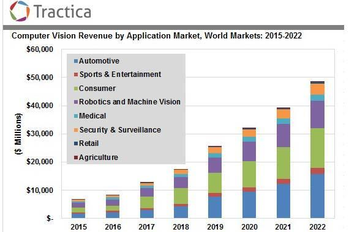

CONTENT
by Joe Hisaishi
Overall
Outlook
With further research on and refinement of the technology, the future of computer vision will see it perform a broader range of functions. Not only will computer vision technologies be easier to train but also be able to discern more from images than they do now. This can also be used in conjunction with other technologies or other subsets of AI to build more potent applications. For instance, image captioning applications can be combined with natural language generation (NLG) to interpret the objects in the surroundings for visually challenged people. Computer vision will also play a vital role in the development of artificial general intelligence (AGI) and artificial superintelligence (ASI) by giving them the ability to process information as well as or even better than the human visual system.
- Augmented Reality
- Artificial Superintelligence (ASI)
Future Market

The global computer vision market is expected to grow from $2.9 billion in 2018 to over $33 billion by 2025.
According to a just published RIS News report, 10% of retailers have started a major upgrade of their computer vision solutions and nearly 17% more will deploy the technology in the next 12 to 24 months.
In the field of Healthcare
Healthcare is a domain where computer vision can bring in some real value. While it cannot replace healthcare personnel, there is a good chance to assist in diagnostics that require a high level of expertise but do not contribute majorly to the final diagnostics.
One of the major challenges the healthcare system is facing is the huge amount of data being produced by patients every year. Microsoft is working to develop a tool that uses artificial intelligence to collect this data and process it to recommend treatment to patients based on their medical history and reports.
Future Agriculture with CV
Computer vision has also changed farming practices to make them more effective and technology-driven. So, what exactly can computer vision bring to the table?
It can offer solutions to monitor and maintain farm equipment and livestock efficiently and easily. Moreover, using deep learning & satellite imagery, farmers can estimate seasonal yield before harvesting directly from their smartphone or computer.
Computer vision can also enable various tasks from planting to harvesting the crops production cycle to be performed automatically.
Augmented Reality Technology
Computer vision affects vision in reality
Augmented Reality (AR) is one of the hottest frontier topics nowadays, and computer vision system with a more advanced neural (improved CNN or RNN) network is an essential part of it.
As we all know, augmented reality technology enables computing devices such as smartphones, tablets, and smart glasses to overlay objects on the real world. Computer vision plays an important role in augmented reality. Though the real potential of computer vision can only be leveraged with Artificial Intelligence (AI) and machine learning, it helps to build more accurate augmented reality environments and enables detection and identification of objects and locating real-world elements. In other words, it helps in object detection and tracking. It also supports augmented reality with simultaneous localization and mapping (SLAM).
The following video gives an specific introduction on the function and working principle of AR and other related topic, like Virtual Reality (VR).